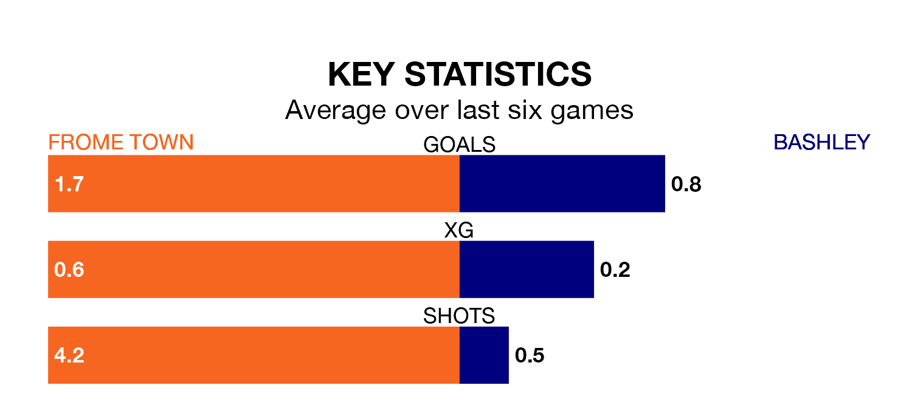

Frome Town host Bashley in Saturday's match at the AlderSmith Stadium looking to bounce back from defeat last time out in Southern League Division One South.
Frome, who sit second in the league after 20 games, fell to a 6-2 away defeat to Tavistock on January 17.
They face a Bashley side who secured a draw in their last match, a 0-0 tie with Bristol Manor Farm, and who sit 18th in the table.
With 21 goals in 18 games so far this season, Bashley are the league's second-lowest scorers with 1.2 goals per game. And they are conceding more than average, letting in 34 goals at a rate of 1.9 per game.
Frome, meanwhile, are above average scorers, with 2.1 goals per game, compared to a league average of 1.6. They have conceded 1.4 goals per game.
Town are in mixed form in Southern League Division One South, with three wins and a draw from their last six games.
With no wins and three draws over that period, the visitors' form is much worse – they have taken three points from 18, compared to the home team's 10.
In the last five years, Frome and Bashley have played each other on four occasions. Bashley won all of them.
On average, Frome scored 0.8 goals and Bashley 2.2 in those matches.
Their last meeting was on October 21, when Bashley won 3-2 at home.
Updated: 09:07 (UTC), 24/01/24